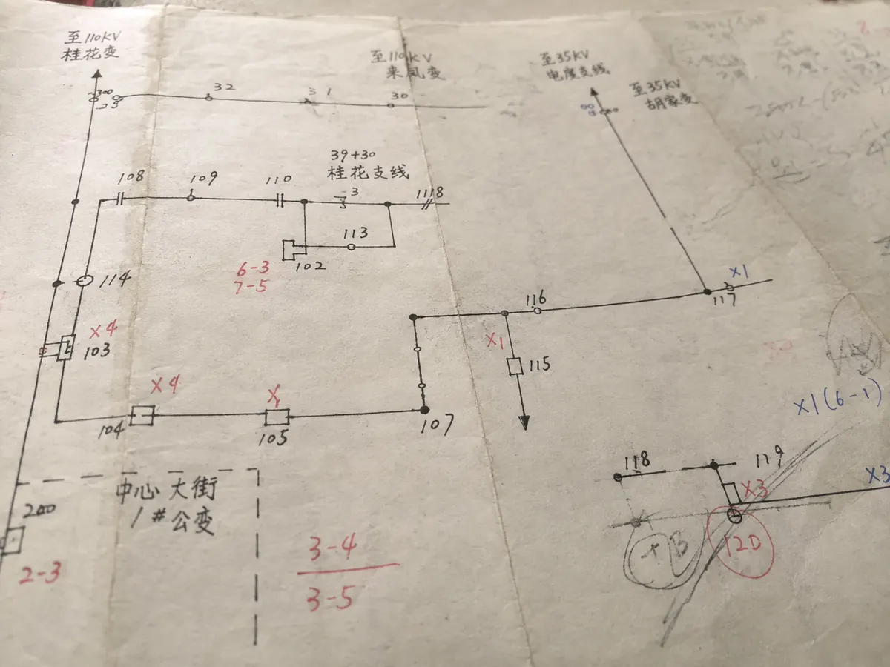

第一幕｜路有多长
31年抢修路线
电力抢修常常赶在最不方便的时候：深夜、暴雨、寒潮、高温。8万多公里巡线，不只是里程，也是责任半径。
来源口径：新华社、新华网、工人日报；这里用抽象路线，不画真实 GIS。


点击故障点
查看“故障点 → 抢修路线 → 处理结果”。

杆塔位置
道路绕行
用户影响
先查节点
第二幕｜把时间省下来
从45分钟到8分钟
很多小发明，起点不是灵感，而是同一个麻烦一次次出现。拖动滑块，看流程如何从“登高更换”变成“地面操作”。
45分钟→8分钟


改造前
- 停电隔离
- 登高作业
- 更换保险
- 复核送电
改造后
- 地面操作
- 快速更换
- 复核送电
缩短约82.2%
按(45-8)/45计算；页面展示为一位小数。案例用于解释“可摘取式低压刀闸”的效率变化。
第三幕｜创新怎么长出来
从故障点到发明点
经验要留下来，不能只靠口口相传。零散的“好办法”，得变成别人也能用的方法。


点击漏斗节点，查看经验如何变成果。
可摘取式低压刀闸
从45分钟压缩到8分钟，站在地面完成操作。
抢修知识沉淀
近万个故障分析，沉淀成案例库与百宝书。
抢修创新服务线路故障机器人楼道社区图纸万家
第四幕｜把人从高处换回地面
机器人接过高危工序
更快之外，还要更安全：少一点高处作业，多一点地面控制。点击部件标签，看机器替人靠近危险的一步。


点击部件，查看为什么它能让人回到地面。
第五幕｜光照到哪里
从抢修现场到社区楼道
抢修解决的是一时的黑，社区服务照见的是每天回家的路。滚动这一屏，看楼道一层层亮起来。


有人回家，不该摸黑上楼。


口径提示：148个黑楼道与后续400+楼道属于不同统计阶段，本页不混用。
第六幕｜一个人之后
更多人跟着出发
一个人的脚步终会慢下来。留下来的线路图、案例库和工具，会带着更多人继续走。

张黎明 → 线路图 / 案例库 / 刀闸改造 / 机器人研发 → 服务队 / 创新工作室 / 电力创客 → 荣誉与技能提升
一盏灯亮起，是一次抢修的结束；也是下一次改造的开始。灯亮之前，他在路上。灯亮之后，这条路没有停。